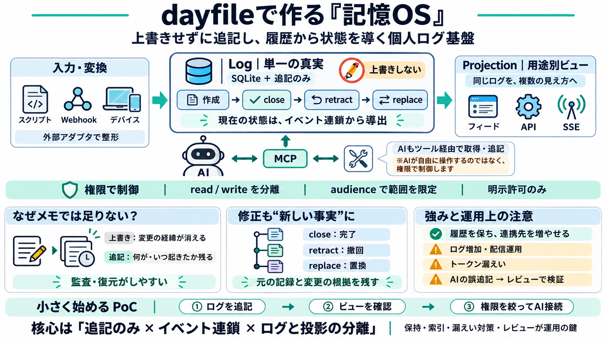

GitHub - dayfile/dayfile: One log for your scripts, apps and agents. · GitHub
- Append-only SQLite log, enforced by triggers. State changes are new events that point back at the original (close it, …

- Append-only SQLite log, enforced by triggers. State changes are new events that point back at the original (close it, …
The most recent release of the CloudEvents specifications can be found via the ce@stable tag. ## Other Specifications …
| Tool | Method | Description | --- | `list_calendars` | Read | List the user's calendars | | `create_calendar` | Writ…
The description uses a specific verb ('List') with a clear resource ('all events') and scope ('for a specific date from …
Big news! Sonar has entered a definitive agreement to acquire Tidelift! + GitHub + GitLab + Bitbucket + By log…